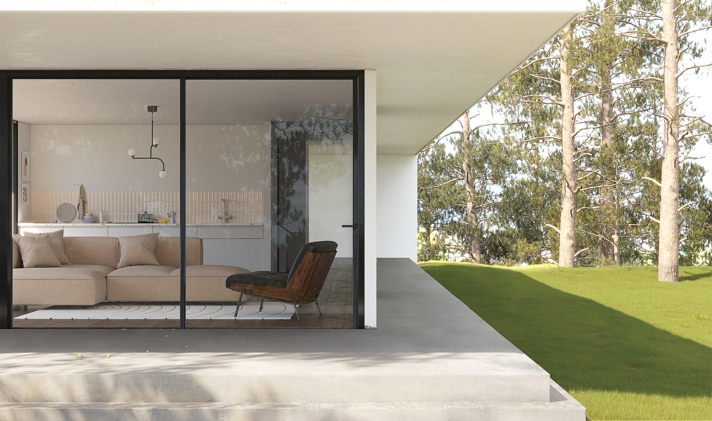
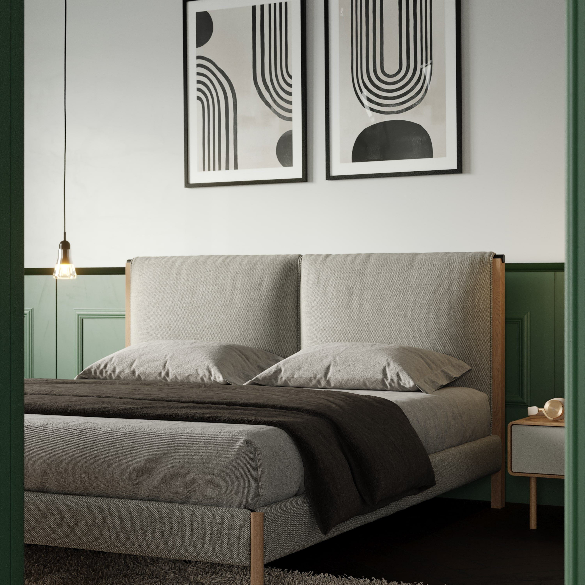
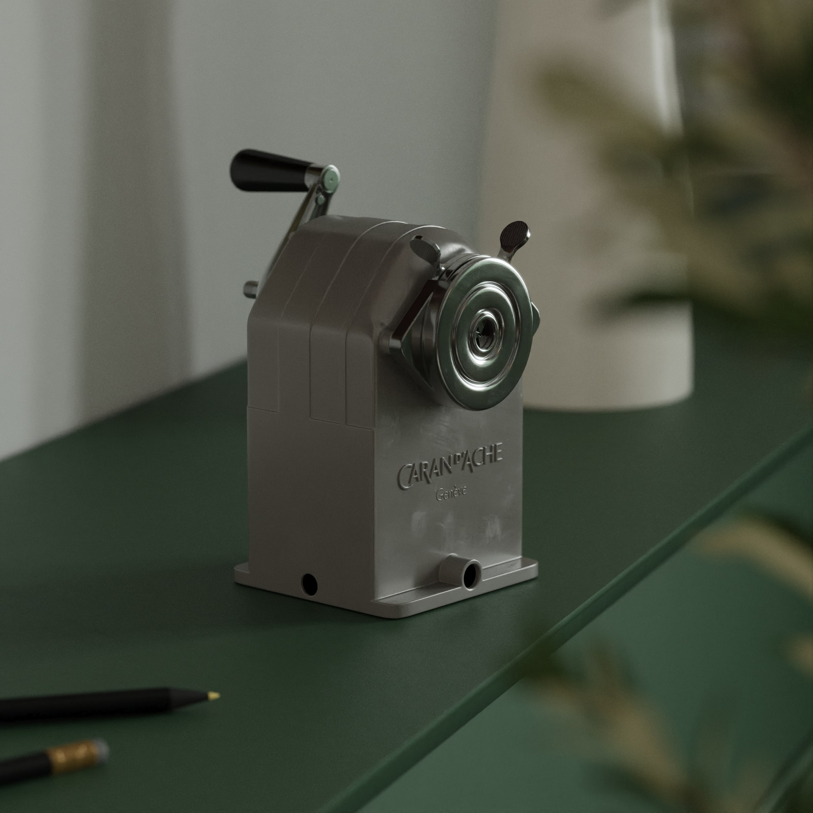
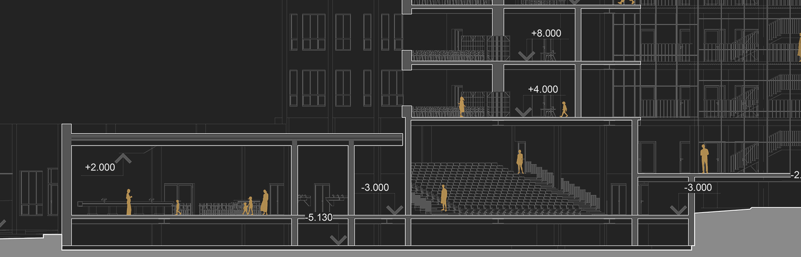
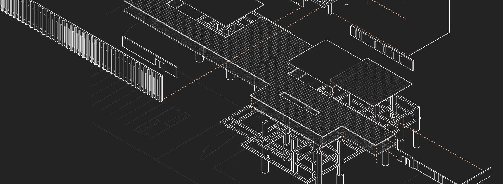

(company)
Stable
1. An architectural visualization studio specialized on interior and exterior computer generated imagery.
synonyms:
archviz, realism, BIM workflow, 3D studio, building modeling
Realism

Envision your project - interior and exterior - with high definition, ultra realistic renders. Choose materials and furniture and make well informed decisions before building or renovating.
GO TO PROJECT →
GO TO PROJECT →
Immersive views
We don't envision houses, but homes. Stable's ultimate goal is to allow viewers to picture themselves living in our creations. Realism alone is not enough, a space needs to feel lived and personal.
GET IN TOUCH →
GET IN TOUCH →
High quality models and textures

High poly, precise meshes and high quality textures are standard. Furniture models are sourced from the manufacturers to garantee an identical representation of the real product.
GO TO PROJECT →
GO TO PROJECT →
Attention to detail

Attention to detail is paramount, it blurs the line between cgi and reality. From subtle surface imperfections to the accurate local flora, no detail is left unattended.
GO TO PROJECT →
GO TO PROJECT →
(method)
BIM workflow
1. An integration between Revit and 3ds Max to ensure accurate dimensions and updated renders.
synonyms:
fast-paced, scalable projects, simplified modeling, accuracy
Precision

The Revit - 3ds Max integration is key to a precise model creation while the BIM workflow ensures the model is always up to date throughout several revisions. Stable bridges complicated architectural plans to realistic imagery.
GET IN TOUCH →
GET IN TOUCH →
Building modeling

From the ground up, a 3D version of the building, neighborhood and environment is modeled - no shortcuts. This allows both our team and clients to better visualize it
GET IN TOUCH →
GET IN TOUCH →